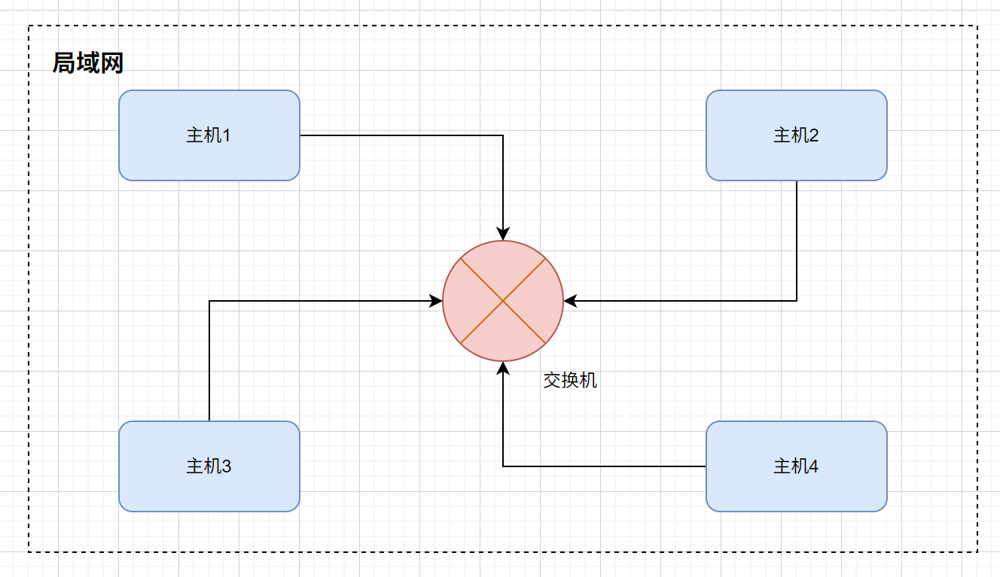
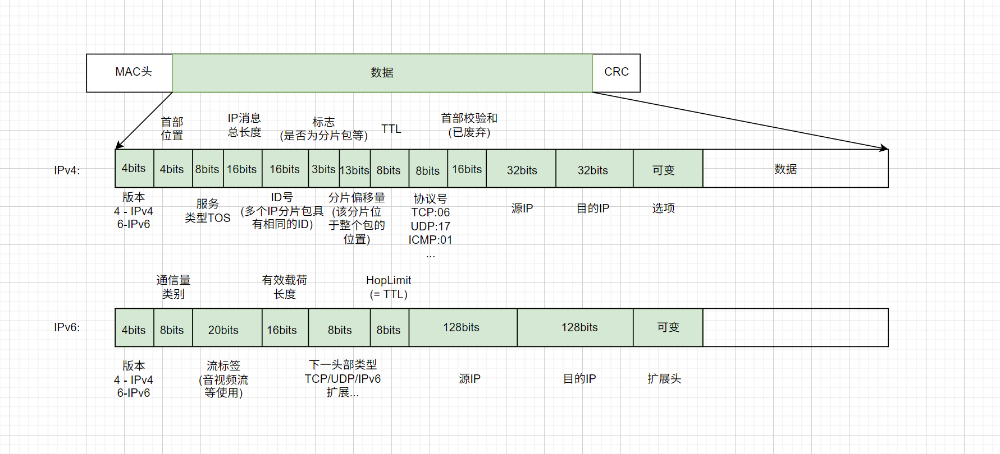
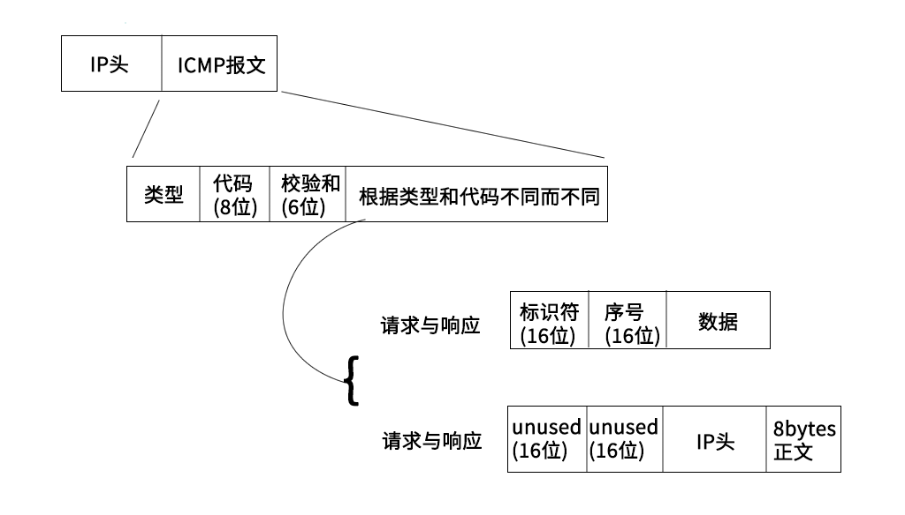
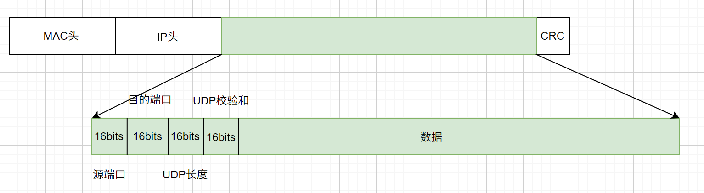
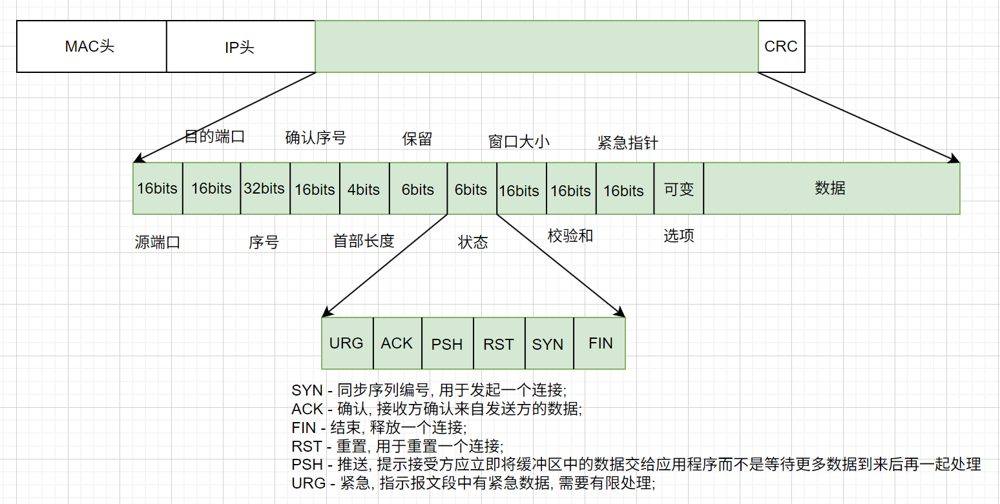
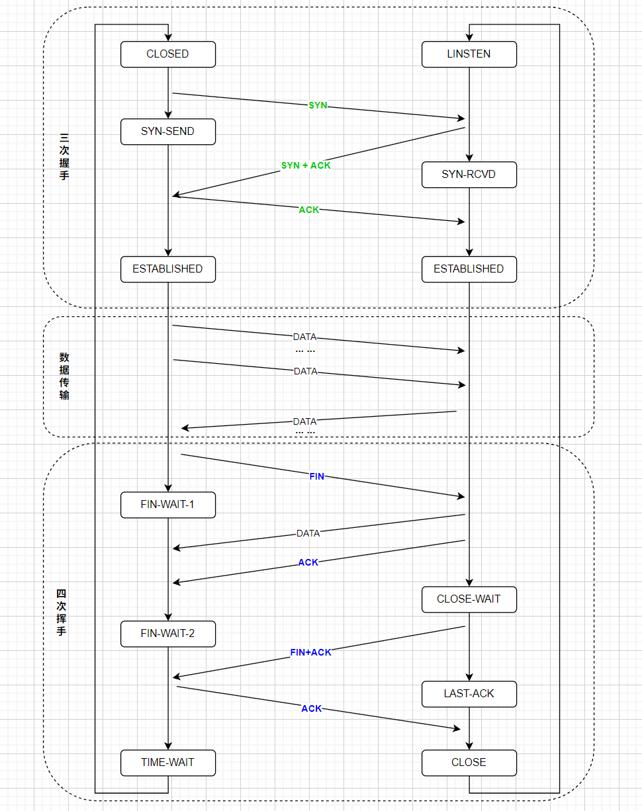
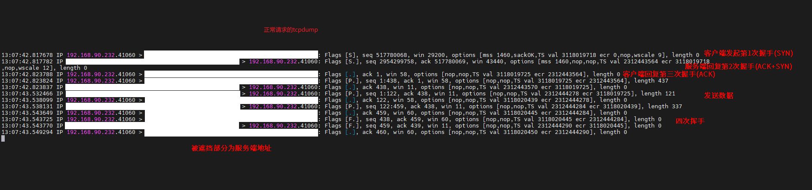
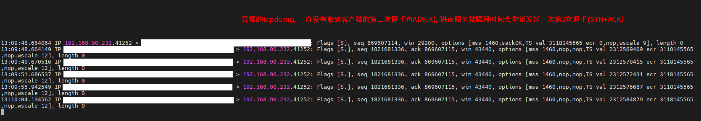
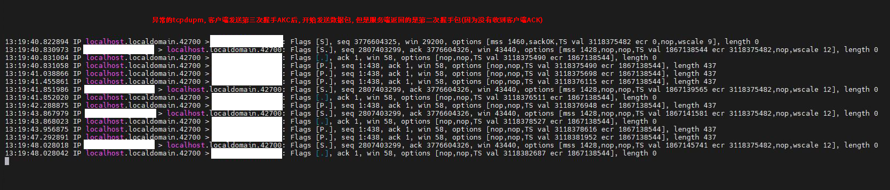
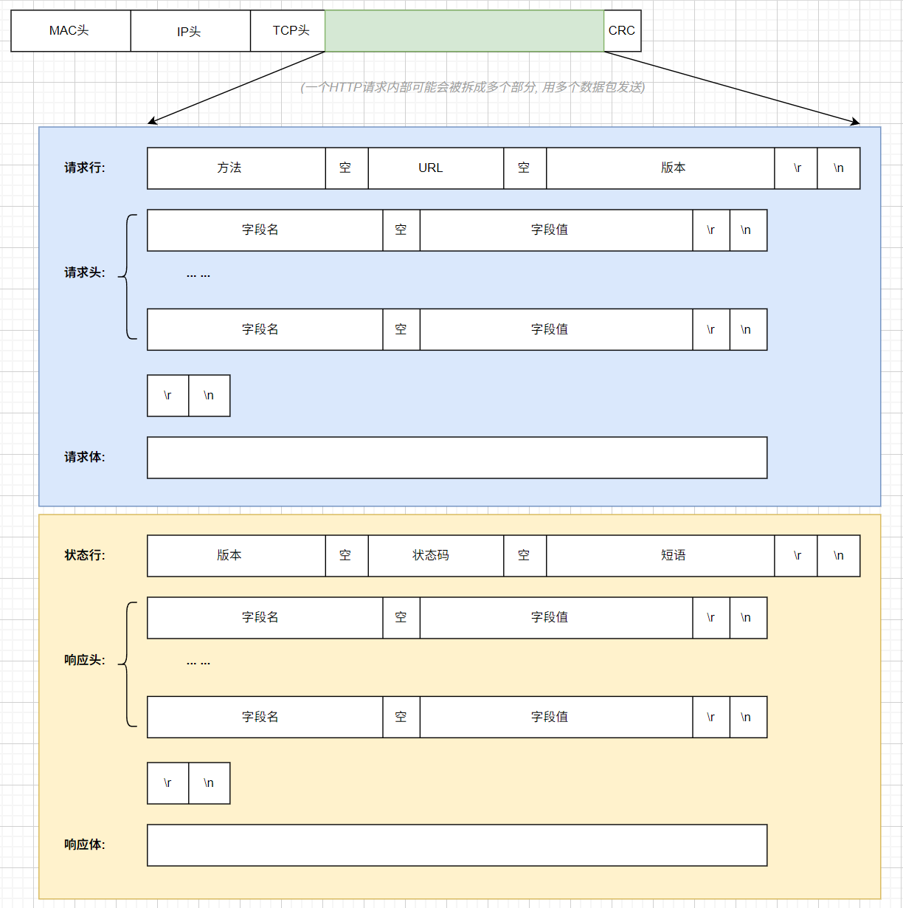

计算机网络
1. 网络分层
- OSI七层模型, OSI即Open System Interconnection, 开放系统互连.
- OSI七层模型在落地实现时, 会话层和表示层实现不了, 它即复杂有不实用, 所以OSI七层模型从来没有真正实现过. 实际中使用的都是TCP/IP模型
如图所示:

- 数据链路层定义了一个局部网络中相邻两个设备间的传输行为;
- 网络层定义了整个网络端到端的传输行为;
- 传输层定义了一个完整数据的传输行为;
- 应用程定义了一个具体业务的传输行为;
这里以一次http请求为例, 简单介绍一下:
- 首先, 浏览器遵照HTTP协议生成http消息, 交给L4(传输层)
- http消息在传输层采用的是TCP协议, 会对数据进行一些处理, 加上TCP头, 并且会控制进行三次握手/四次挥手等;
- TCP消息交给L3(网络层). 网络层会加上IP头, 即源ip和目的ip等;
- 然后交给L2(数据链路层), 这里有ARP和MAC等的参与, 会对消息加上MAC头;
- 然后交给L1(物理层), 变成电磁波发送出去.
网络上的包都是完整的, 可以有下层没上层, 绝对不可能有上层没下层.
2. 物理层
物理层不就是网线啥的硬件设备嘛, 有啥好说的呢? 有:
- 1-3,2-6交叉接法: 水晶头的第 1、2 和第 3、6 脚，它们分别起着收、发信号的作用。将一端的 1 号和 3 号线、2 号和 6 号线互换一下位置，就能够在物理层实现一端发送的信号，另一端能收到;
- 集线器(Hub): 可以将多台电脑连接起来, 集线器没有程序, 就是一个简单的将线连接起来, 它接收到的每一个字节都会广播到其他端口上去.
3. 数据链路层
3.1 MAC
MAC全称Medium Access Control, 即媒体访问控制.
MAC有以下需要注意的点:
- 标记发送方和接收方: mac头上记录了目标MAC和源MAC
- 多路访问(谁先发谁后发): 信道划分, 轮流协议, 随机接入协议;
- 数据错误校验: 通过mac包最后的CRC(循环冗余检测)校验整个包在发送过程中是否出现错误.

CRC, 循环冗余检测, 使用XOR异或算法, 检查在网络上传输数据是否出错.
3.2 ARP
ARP协议是: 根据IP地址获取该设备的MAC地址. 当明确接收方的IP地址后, 通过广播的方式, 询问局域网中的其他设备, "IP:xxx的MAC地址是多少?", 广播出去之后, 谁的IP是报文中的IP, 谁就回答. 此外并不是每次发送数据, 都需要先进行ARP请求, 机器会将ARP缓存在本地.
ARP协议包示意图如下:

发送请求时, 广播的目标mac是: ff:ff:ff:ff:ff:ff
ARP到底属于网络层协议还是数据链路层是有争议的

3.3 交换机
一个局域网中, 如果有多台主机设备, 如果通过集线器进行数据转发会有问题. 每一个数据包都广播到其他线路上去, 让主机判断目的mac地址是不是自己的, 导致而不是自己的就丢弃, 这样资源浪费. 这时就需要一种设备, 这个设备可以通过mac地址确定应该转发到哪个线路的端口上去, 这个设备就是交换机.

- 交换机是一个二层设备.
- 交换机最初并不知道目标mac在哪一个端口上, 依旧会将包转发到所有其他端口, 但是它知道数据包是从哪来的, 也就是知道源mac在哪个端口, 一点点它就记录了所有mac所在的端口, 这样就可以通过mac转发到指定的端口上去了, 而不需要转发到所有端口.
- 交换机上的学习结果称为转发表, 转发表是有过期时间的.
显然, 交换机是在一个局域网中使用的.
传统交换机是二层交换机, 实际上也是有三层交换机的. 三层交换机是在二层交换机的基础上，增加了路由选择功能的网络设备, 可以跨vlan进行数据通信等. 在路由转发上, 速度要比路由器快.
当一个局域网中存在多台交换机时, 就会出现环路问题, 从而导致环路风暴. 解决环路问题的方法叫STP(Spanning Tree Protocol), 利用最小生成树算法, 破坏环路, 化"图"为"树".
现在STP使用的很少了, 而是通过别的方式来解决环路风暴了, 比如数据中心的TRILL(Transparent Interconnection of Lots of Link, 多链路透明互联协议)
3.4 VLAN
VLAN(Virtual Local Area Network), 虚拟局域网. 本来二层交换机只能构建单一的广播域, 但是使用了VLAN功能后, 可以将单一的物理网络进行逻辑分段, 分割成多个广播域. 不同的广播域之间是不存在直接的通信的.
跨VLAN通信需要使用路由器
支持VLAN需要对二层的MAC包进行调整, 添加tag:

拆分成多个广播域的好处:
- 避免了广播包在整个网络中传播, 提升网络的性能;
- 信息隔离, 保证信息安全, 防止信息泄露;
- 等等...
交换机的端口:
- Access:
- 收: 交换机接收到数据后, 先判断是否带VLAN tag;
- 有且与配置的PVID一致则接收;
- 有, 但是与端口的PVID不同则丢弃;
- 没有, 则打上该端口已配置的PVID(发送时不会剥离);
- 发:
- 收到的数据包的VLAN ID与端口的PVID相同, 则剥离VLAN ID, 变成普通数据包发送出去;
- 收到的数据包的VLAN ID与端口的PVID不同, 丢弃;
- 收到的数据包没有VLAN ID, 打上PVID, 发送出去;
- Trunk: 允许不同VLAN tag的数据包通过, 一般用于交换机之间;
- 收:
- VLAN TAG在trunk允许列表内的接收;
- 没有VLAN TAG的, 接收, 打上PVID(发送时不会剥离);
- 不在允许列表内的丢弃;
- 发:
- VLAN TAG与PVID相同, 则剥离VLAN ID后发送;
- VLAN TAG与PVID不同, 但是在允许列表内, 则发送;
- 否则丢弃;
- Hybrid: Access和Trunk的混合.
PVID是默认VLAN ID, 又叫native VLAN
3.5 小结
数据链路层数据传输大致流程:
- 主机A创建数据包, 源MAC地址填自己sss, 目标MAC地址填接收端;
- 如果不知道接收端的MAC地址, 通过ARP协议获取目的MAC地址;
- 具体流程是, 通过广播的方式, 发问: "IP为xxx的主机, MAC地址是多少呀?"
- 这时, IP为xxx的主机收到消息, 就会回答"MAC地址是yyy"
- 主机A将填有源MAC和目标MAC的数据包从网口发送出去, 顺着网线, 就到达了交换机;
- 假设数据包从交换机的a口进入, 这时交换机就记住了a口连着的主机mac地址是sss;
- 交换机查看目标mac地址yyy, 然后查表, 发现yyy是b口连着的主机;
- 于是交换机将数据包从b口发送出去;
- b口另一端的B主机接收到数据包, 拆包发现MAC地址yyy正是自己的MAC地址, 所以就接收了.
上面的流程是一个局域网内的, 要是跨网络传输, 需要借助路由器, 这就属于网络层的内容了
4. 网络层
4.1 IP
- 网络号: ip地址前面的部分, 用于定位一个子网
- 主机号: ip地址后面的部分, 用于定位子网内的一个具体的主机地址
- 子网掩码: 用于区分网络号和主机号, 是一串与ip地址长度相同的数字, 其左边都是1, 右边都是0. 子网掩码为1的部分表示网络号, 为0的部分表示主机号.
传统ip地址分类

- A类, 最大网络数: 126(2^7-2), 单个网段最大主机数: 16777214
- B类, 最大网络数: 16384(2^14), 单个网段最大主机数: 65534
- C类: 最大网络数: 2097152(2^21), 单个网段最大主机数: 254
- 特殊的ip
- ip地址的主机号全是0, 表示整个子网; 例如: 192.168.12.0/255.255.255.0
- ip地址的主机号全是1, 表示广播地址. 例如: 192.168.12.255/255.255.255.0
- 0.0.0.0表示当前主机
- 255.255.255.255是当前子网的广播地址
- ip地址不能以127开头, 127.0.0.1 - 127.255.255.255用于回路测试
- 私有IP
- 允许组织内部自行进行分配的ip, 不同的局域网IP可以重复, 局域网内唯一
- 10.0.0.0 - 10.255.255.255
- 172.16.0.0 - 172.31.255.255
- 192.168.0.0 - 192.168.255.255
- 公网IP
- 由组织统一分配, 需要购买
- 每一个公网IP都是全球范围内唯一的
无类型域间路由(CIDR)
- A,B,C,D,E类IP地址的子网掩码都是固定的, 这导致无法灵活控制主机数和网络数的规模, 从而导致存在一个网段内的IP冗余或者不足, 于是有了CIDR
- CIDR消除了传统A类, B类, C类地址以及子网划分的概念, 从而更加有效的分配IPv4地址空间
- CIDR形式是这样的: 192.168.1.0/26, 将IP地址一分为二, 前面26位是网络号, 后面6位是主机号
- CIDR已经成为现代网络中的标准，而传统的网络类别已经不再使用.
IP是具有定位能力的, 通过网络号和主机号, 可以标记一个主机的位置, MAC不具有定位能力, 类似身份证号, 具有唯一性
IP头:

4.2 IP查看与分配
- windows下, 查看IP地址, 使用:
ipconfig
- linux下
- 查看IP地址, 使用:
ifconfig或者ip addr/ip a
- 设置IP地址:
- net-tools:
ifconfig eth1 10.0.0.1/24ifconfig eth1 up
- iproute2:
ip addr add 10.0.0.1/24 dev eth1ip link set up eth1
- IP不是随意配置的, 如果配置了不属于当前网段的IP, 会导致网络不通
- 如果同一网段之间的两个IP通信, 可以直接发送数据, 不经过网关
- 如果不通网段之间的IP通信, 需要经过网关, 网关地址需要和当前主机的至少一个网卡属于同一网段
- DHCP(动态主机配置协议, Dynamic Host Configuration Protocol)
- 主机通过DHCP自动获取IP地址
- DHCP是应用层协议, 传输层使用的是UDP; 具体使用67和68端口, 服务器使用67号端口监听客户端请求, 客户端使用68端口发送请求和接受响应;
- 工作原理
- DHCP Discover: 使用0.0.0.0作为源IP, 255.255.255.255作为目的IP, 传输层使用UDP协议, 发送广播包, (目的MAC: ff:ff:ff:ff:ff:ff);
- DHCP Offer: 这时DHCP Server接收到消息, 从剩余IP资源中分配一个, 依旧采用广播的形式, 将这个IP广播出去, 这时, 源IP是DHCP Server的IP, 目的MAC是发起DHCP的主机的IP, 这个消息中包含的信息有: IP地址, 子网掩码, 网关, IP地址租用期等;
- 客户端主机接收到DHCP Offer消息, 这时, 如果网络中存在多个DHCP Server, 就会收到多个消息, 会选取其中一个, 然后发送确认消息, 发送确认消息时, 依旧使用0.0.0.0作为源IP, 255.255.255.255作为目的IP进行广播;
- DHCP Server收到确认消息后, 广播一个ACK应答, 至此完成DHCP.
- DHCP续租和回收: 当租期过去50%后, 提供IP地址的DHCP Server会发送消息, 客户端接收到消息后, 会更新租期.
- DHCP Server还可以用来安装操作系统, 一般用于数据中心批量进行系统安装, 涉及PXE(预启动执行环境), 具体略
4.2 网关与路由
网关往往是一个路由器, 是一个三层转发的设备. 它有多张网卡. 当一个入口的网络包送到路由器时, 它会根据一个本地的转发信息库, 来决定如何正确地转发流量. 这个转发信息库通常被称为路由表. 路由器和交换机相似的点是, 路由器也是通过查表判断转发的目标. 但是路由器是基于IP进行设计的. 经过路由器时, 数据包的MAC头要变, 此外, 如果IP头不变, 属于静态路由, 如果IP头变, 属于动态路由.
- 静态路由: 转发规则是固定的, 不同的目的IP需要转发到哪里直接查路由表, 然后转发即可. (静态路由不会修改数据包的源目IP)
- 动态路由: 动态路由通过NAT(Network Address Translation, 网络地址转换)来实现.
NAT
NAT是一种在IP数据包通过路由器时修改其 IP 地址和端口号的技术, 它的诞生主要解决 IPv4 地址短缺问题, 同时也用于实现内网隔离, 负载均衡等功能. NAT 工作在网络层(IP 层)和传输层(TCP/UDP),通过修改 IP 包的源/目标地址和端口信息实现网络间通信.
- 关键组件:
- NAT 表（NAT Table）：存储内网 IP / 端口与公网 IP / 端口的映射关系
- NAT 网关：执行地址转换的网络设备（路由器、防火墙或专用 NAT 设备）
- IP 与端口重写机制：在数据包进出网络时修改报头信息
- 核心工作流程:
- 内网主机 → 请求数据包 → NAT网关 → 修改源地址为网关公网IP → 转发至公网
- 公网服务器 → 响应数据包 → NAT网关 → 根据NAT表还原目标地址 → 转发至内网主机
- 主要类型
- 静态NAT
- 特点: 一对一映射，内网 IP 固定映射到公网 IP
- 应用场景: 服务器对外提供服务
- 配置示例: 内网服务器IP: 192.168.1.10 → 公网IP: 202.100.1.10
- 动态 NAT
- 特点: 从公网 IP 池中动态分配 IP 给内网主机
- 应用场景: 企业内网用户访问互联网
- 工作流程: 内网主机请求 → 从可用公网IP池分配一个IP → 建立映射 → 通信结束后释放IP
- 端口 NAT(PAT)
- 特点：多对一映射，通过端口号区分不同连接
- 应用场景：家庭路由器共享宽带上网
- 映射示例：1. 192.168.1.100:10000 → 202.100.1.1:60000; 2. 192.168.1.101:20000 → 202.100.1.1:60001; 3. 192.168.1.102:30000 → 202.100.1.1:6000
- 双向 NAT
- 特点：同时转换源地址和目标地址
- 应用场景：复杂网络架构中的安全隔离、数据中心互访
- 典型场景: 内网A → NAT网关 → 修改源地址 → 转发至内网B; 内网B → NAT网关 → 修改目标地址 → 转发至内网A
个人总结:
- 常规的网络传输, 没有NAT之类的, 那么整条网络链路一定是可逆的, A能到B, B也能到A;
- 对于静态NAT, 内网IP和外网IP直接也是一一对应的, 所以显然也是可逆的;
- 对于动态NAT, 内网IP和外网IP会临时建立一一对应的关系, 在建立关系这段时间是可逆的. 当会话结束/空闲超时就会销毁这个映射关系, 将外网IP归还地址池;
- 对于端口NAT, 内网IP与外网IP+端口之间的映射关系通常也是动态的, 当会话结束/空想超时就会自动销毁;
路由协议
源IP和目的IP之间可能不止要经过一个网关, 而是有可能有多个, 而且每一跳的选择也可能有很多, 往哪跳是最优的呢? 解决这个问题有以下方式:
- 静态路由
- 路由表
- 路由表至少有三个信息: 1. 目标网络; 2. 出口设备(从哪个网卡出去); 3. 下一跳的网关地址;
- 配置示例:
ip rule add from 192.168.1.0/24 table 10, 配置所有从192.168.1.0/24网段来的, 都使用table10这个路由表;ip route add 192.168.1.0/24 via 192.168.1.1 dev eth0 table 10, 配置table10路由表, 使得192.168.1.0/24网段的都从eth0这个端口出去, 下一跳的网关地址是192.168.1.1
- 动态路由
- 距离矢量路由算法
- 原理:
- 每个路由器都保存一个路由表, 里边包含多行, 每行包含如下信息: 1. 目标路由器地址; 2. 距离目标路由器的距离(跳数); 3. 从哪个接口出去;
- 每个路由器都知道整个网络的全部信息
- 优缺点:
- 好消息传的快(新增一个路由器), 坏消息传的慢(一个路由器挂掉了)
- 每次路由表同步都需要发送整个路由表
- 实现实例
- RIP: 早期路由协议采用的算法, 适用于小型网络(小于15跳)
- BGP: (Border Gateway Protocol, BGP)与下面的IGP相对, 是外网路由协议, 即国家之间/公司之间.
- 内部网络当然是找最近的路线走, 但是外部网络受政策, 数据泄露等问题影响, 不止要考虑距离;
- 自治系统(AS): 每个内部网络系统称为一个自治网络
- Stub AS: 小型自治网络, 对外只有一个连接. 不会帮助转发其他AS的包;
- Multihomed AS: 可以连接到多个其他AS, 一般情况下, 不会参与转发其他AS的包;
- Transit AS: 可以连接到多个其他AS, 参与转发其他AS包, 例如: 主干网络.
- 分类:
- iBGP: 通过该算法, 可以使得内部路由器找到抵达外网的最好边界路由器;
- eBGP: 外部网络的路由器直接使用该算法广播;
- 由于自治系统有限, 路由表的规模不会很大;
- 由于AS的存在, 避免了坏消息传的慢.
- 链路状态路由算法
- OSFP: (Open Shortest Path First, 开放式最短路径优先)
- 一个路由启动时, 向所有"邻居"发送echo请求, 并得到回复, 除以二即是距离; 然后将自己和所有邻居的距离广播出去. 最终每个路由器都能构建出整个网络完整的图;
- OSFP主要用于数据中心内部, 用于路由决策, 因而一般称为内部网关协议(Interior Gateway Protocol, IGP)
ip route
ip route show table [table_name_or_number]: 查看特定路由表中的条目ip route add [destination_network/prefix] via [gateway] dev [interface] table [table_name_or_number]: 添加指定的路由到特定的路由表ip route del [destination_network/prefix] table [table_name_or_number]: 从特定的路由表中删除条目
ip rule
ip rule show: 查看现有规则ip rule add [匹配条件] [ACTION]: 添加新规则ip rule del [匹配条件] [ACTION]: 删除规则- 其中, 匹配条件包括:
from [address]: 指定数据包的源IPto [address]: 指定数据包的目的IPtos [value]或者priority [value]: 设置服务类型或优先级iif [interface]: 输入接口名称oif [interface]: 输出接口名称
- action一般包括:
table [table_id_or_name]: 指定路由表unreachable: 使得匹配条件的流量直接返回"unreachable"消息prohibit: 拒绝blackhole: 丢弃
route
route命令也可以完成路由策略的增删改查, 但是这是一个比较老的命令了. 不支持多路由表和更复杂的路由策略;route/route -n: 获取当前系统的路由表;route add -net [目标网络] netmask [子网掩码] gw [网关地址]: 添加路由route del -net [目标网络] netmask [子网掩码]: 删除路由route add default gw [网关地址]: 设置默认网关, 即当没有匹配到其它路由规则时使用的路由
route -n返回结果示例:
[root@10 ~]# route -n
Kernel IP routing table
Destination Gateway Genmask Flags Metric Ref Use Iface
0.0.0.0 10.0.2.2 0.0.0.0 UG 100 0 0 eth0
10.0.2.0 0.0.0.0 255.255.255.0 U 100 0 0 eth0
192.168.122.0 0.0.0.0 255.255.255.0 U 0 0 0 virbr0
4.3 ICMP
ICMP 全称 Internet Control Message Protocol, 就是互联网控制报文协议. 用于在IP网络中传递控制消息.
ICMP消息被用于许多不同的目的, 包括:
- 错误报告: 当数据包在传输过程中丢失或损坏时, ICMP会向源主机发送错误报告, 以便源主机能够采取适当的措施
- 联通性测试: ping命令就是利用ICMP协议向目标主机发送Echo请求消息，并等待目标主机返回Echo响应消息
- 路由发现: 帮助主机找到到目标主机的最佳路由
ICMP消息通常由网络设备（如路由器或防火墙）生成并发送，但也可以由主机或网络应用程序生成和发送。

ping
ping命令在网络诊断中是常用工具, 用于测试目标主机的连通性和响应时间. ping命令是基于ICMP的, ICMP是IP协议的一部分, 用于传递控制消息. ping协议本身处于应用层, 而ICMP是网络层协议.
ping由于跳过了传输层, 直接使用网络层的ICMP, 因此不需要指定端口号.
ping的原理:
- ping利用了ICMP两种类型的控制消息: echo request(回显请求), echo reply(回显应答);
- 在主机A上执行ping命令, 这时主机A发送"echo request"控制消息;
- 主机B正确接收后, 回复"echo reply";
- 主机A通过对方回复的数据包来确定两台网络机器是否连接相通, 时延是多少.
traceroute
上面说ping协议使用的ICMP中的: echo request(回显请求), echo reply(回显应答); 除了这两个, 还有别的控制消息, 例如: 差错报文类型. traceroute就是使用差错报文类型, 故意产生一些错误, 从而探测整个网络链路;
- 故意设置特殊的TTL, 来追踪去往目的地时沿途经过的路由器.
- TTL: Time To Live, 生存时间, 存在与IP数据包头部, 用来限定数据包在网络传输中最大跳数, 即经过的路由器数量, TTL的设计初衷是为了防止数据包在网络中无限循环而浪费网络资源. 当一个数据包被发送出去后，每经过一个路由器，其TTL值就会减1。当TTL值降至0时，该数据包会被丢弃，且通常会向源地址返回一个ICMP超时消息
- 例如traceroute首先发送一个TTL为1的UDP包, 一旦它遇到一个路由器或者其他网络层设备, 就会丢弃, 同时向源地址返回一个ICMP差错包.
- 再设置TTL=2, 依此往复, 就把整个链路摸清了
- 有些路由器设备不会返回ICMP差错报文, 这时就看不到这个中间路由.
- traceroute如何判断UDP有没有到达最终目的主机: traceroute发送UDP包时, 会把端口设置为30000以上, 使得最总的目标主机产生一份"端口不可达"的ICMP差错报文, 从而确定到达目标主机. 如果主机不可达, 则收不到消息而超时.
- traceroute还有一个作用是故意不设置分片, 从而确定路径的MTU(MTU: Maximum Transmission Unit, 链路层上能够发送的最大数据包大小, 以字节为单位);
一个典型的traceroute流程大致如下:
- 初始探测: 发送TTL=1, 目标端口30000以上的UDP探测包;
- 路径节点发现: 每次TTL值加1, 由于TTL过小导致触发ICMP差错报文, 重复多次, 客户端记录对应路由器IP地址和响应时间;
- 终点判断: 当收到目标主机的ICMP端口不可达报文时, 终止探测.
如下是windows下的一次tracert的执行结果:
C:\Users\frogif>tracert 192.168.12.12
Tracing route to bogon [192.168.12.12]
over a maximum of 30 hops:
1 2 ms 1 ms 1 ms bogon [192.168.1.1]
2 6 ms 9 ms 9 ms 100.101.0.1
3 * * * Request timed out.
4 * * * Request timed out.
展示了数据包从你的计算机到目标主机所经过的每一个路由器（或称为“跃点”）的信息，包括每个跃点的IP地址或域名以及往返时间（通常给出三次测量的平均值）. 其中第一跳可能是本地网络的路由. 第3条和第4跳的请求超时, 可能表明该路由设备不支持返回ICMP差错报文, 所以没有等到结果.
linux下命令是traceroute, windows下命令是tracert
5. 传输层
5.1 UDP
UDP是简单的传输层协议, 它是无状态的, 不可靠的. 它只管发送, 不管接收端是否接到.
UDP包头特别简单:

应用场景:
- DHCP
- VXLAN
- QUIC
5.2 TCP
TCP协议是面向连接的, 可靠性高.
TCP包头:

TCP整体流程:

- LISTEN: 等待从任何远端TCP 和端口的连接请求;
- SYN_SENT: 发送完一个连接请求后等待一个匹配的连接请求;
- SYN_RECEIVED: 发送连接请求并且接收到匹配的连接请求以后等待连接请求确认;
- ESTABLISHED: 表示一个打开的连接，接收到的数据可以被投递给用户。连接的数据传输阶段的正常状态;
- FIN_WAIT_1: 等待远端TCP 的连接终止请求，或者等待之前发送的连接终止请求的确认。
- FIN_WAIT_2: 等待远端TCP 的连接终止请求。
- CLOSE_WAIT: 等待本地用户的连接终止请求。
- CLOSING: 等待远端TCP 的连接终止请求确认。
- LAST_ACK: 等待先前发送给远端TCP 的连接终止请求的确认（包括它字节的连接终止请求的确认）
- TIME_WAIT: 等待足够的时间过去以确保远端TCP接收到它的连接终止请求的确认。
- TIME_WAIT 两个存在的理由：1.可靠的实现tcp全双工连接的终止；2.允许老的重复分节在网络中消逝。
- 客户端需要等待
2*MSL(MSL, Maximum Segment Lifetime, 报文段最长寿命)时间后从该状态变为CLOSED状态, 如果客户端没有在 2*MSL 的时间内收到了 FIN，就会重新发送 ACK 并再次等待 2MSL，防止 Server 没有收到 ACK 而不断重发 FIN.
- CLOSED: 不在连接状态（这是为方便描述假想的状态，实际不存在）
三次握手
- 第1次握手：客户端发送一个带有SYN（synchronize）标志的数据包给服务端；
- 第2次握手：服务端接收成功后，回传一个带有SYN/ACK标志的数据包传递确认信息，表示我收到了;
- 第3次握手：客户端再回传一个带有ACK标志的数据包，表示我知道了，握手结束
四次挥手
- 第1次挥手：客户端发送一个FIN，用来关闭客户端到服务端的数据传送，客户端进入FIN_WAIT_1状态；
- 第2次挥手：服务端收到FIN后，发送一个ACK给客户端，确认序号为收到序号+1（与SYN相同，一个FIN占用一个序号），服务端进入CLOSE_WAIT状态；
- 第3次挥手：服务端发送一个FIN+ACK，用来关闭服务端到客户端的数据传送，服务端进入LAST_ACK状态；
- 第4次挥手：客户端收到FIN后，客户端t进入TIME_WAIT状态，接着发送一个ACK给Server，确认序号为收到序号+1，服务端进入CLOSED状态，完成四次挥手。
为什么是四次?
TCP 是全双工通信，可以双向传输数据。任何一方都可以在数据传送结束后发出连接释放的通知，待对方确认后进入半关闭状态。当另一方也没有数据再发送的时候，则发出连接释放通知，对方确认后就完全关闭了 TCP 连接。
tcpdump
tcpdump -i any -n port 80: 捕获数据包, -i any抓取所有网卡; -n所有域名都转ip显示; -port 80指定抓取的端口tcpdump -i any -n host 10.0.0.1: 只捕获和10.0.0.1之间的数据包tcpdump -i any -n host 10.0.0.1 and port 80: 只捕获和10.0.0.1的80端口之间的数据包tcpdump -i any -n host 10.0.0.1 and port 80 -w <文件名>: 只捕获和10.0.0.1的80端口之间的数据包, 并保存到指定的文件中
真实问题
具体现象如下:
- 主机A作为客户端访问主机B服务端;
- 从A上ping主机B可以ping通;
- 从A上telnet主机B的指定端口也是通的;
- 通过curl命令从A访问B, 有50%的请求是通的, 另外50%不通;
- tcpdump发现第三次握手包(A->B: ACK), B没有接收到, 导致B隔一段时间会重发一次第二次握手(B->A: SYN+ACK), 进而出发A重发第三次握手, 如此往复几个来回, 然后连接中断;
- 最后排查问题是网络上的硬件设备转发逻辑故障(具体原因不明, 总之更换了硬件设备)
现象图片:
- 服务端抓包, 正常的请求:

这里的四次挥手为什么变成了三次挥手?(1. FIN+ACK; 2. FIN+ACK; 3. ACK)
答: 标准的四次挥手是(1. FIN; 2. ACK; 3. FIN+ACK; 4. ACK;). 这里变为三次是因为: 当被动关闭方（上图的服务端）在 TCP 挥手过程中，「没有数据要发送」并且「开启了 TCP 延迟确认机制（默认会开启）」，那么第二和第三次挥手就会合并传输，这样就出现了三次挥手。
这里第一次挥手为啥是FIN+ACK, 标准流程不是FIN吗?
答: 由于TCP是可靠传输协议，它需要确保发送的报文能够被对方正确接收。因此，在发送FIN标志的同时，也需要发送ACK标志，表示它已经确认接收到对方发送的数据，并且已经准备好关闭连接。这就是为什么第一次挥手发送的TCP报文中带有FIN和ACK标志的原因。只不过在实际及大多数人的理论中经常忽略这个ACK包.
- 服务端抓包, 异常的请求:

- 客户端转包, 异常的请求:

其他
- 滑动窗口: 顺序问题, 丢包问题, 流量控制
- 拥塞窗口: 拥塞控制
长连接
所谓长连接, 主要是传输层的概念. 长连接指的是在传输层建立的连接能够保持开放状态一段时间, 以便在这段时间内可以持续地进行数据交换, 而无需为每个请求重新建立连接. 具体来说, TCP协议支持长连接的方式通过三次握手建立连接, 并且在没有数据传输时, 可以通过诸如心跳包等机制来维持连接不断开. 这种方式非常适合需要频繁通信的应用场景, 比如Websocket/FTP以及一些数据库连接等. 使用长连接可以减少建立和断开连接带来的开销, 提高数据传输效率和服务响应速度.
长连接维护方式:
- 心跳机制
- 定期发送心跳包, 告诉服务器"我还在线"; (同时也使得网络链路中的NAT设备保持动态映射不释放)
- 服务器若长时间为收到心跳, 则关闭连接;
- 重连机制
- 如果连接断开, 客户端会尝试自动重新连接, 避免手动重启;
6. 应用层
6.1 HTTP
格式:

示例:
POST /mcp/pc/pcsearch HTTP/1.1
Accept: */*
Accept-Encoding: gzip, deflate, br, zstd
Accept-Language: en-US,en;q=0.9,zh-TW;q=0.8,zh;q=0.7
Cache-Control: no-cache
Connection: keep-alive
Content-Length: 56
Content-Type: application/json
Host: ug.baidu.com
xxxxxxxxxxxxxxxxxxxxxxxxxxxxxxxxxxxxxxxxxxxxxxxxxxxxxxxxxxxxxx
HTTP/1.1 200 OK
Access-Control-Allow-Credentials: true
Access-Control-Allow-Headers: Content-Type
Access-Control-Allow-Methods: POST, GET
Access-Control-Allow-Origin: https://www.baidu.com
Content-Length: 105
Content-Type: application/json; charset=utf-8
Date: Sat, 21 Jun 2025 06:27:46 GMT
Tracecode: 20855692410186246410062102
{"errno":0,"errmsg":"ok","data":{"log_id":"2085569241","action_rule":{"pos_1":[],"pos_2":[],"pos_3":[]}}}
HTTP版本
- HTTP/1.0: 浏览器与服务器之间只保持短暂的连接, 浏览器的每次请求都需要与服务器建立一个TCP连接, 服务器完成请求处理后立即断开TCP连接, 服务器不跟踪每个客户端也不记录过去的请求;
- HTTP/1.1: 主要是基于 HTTP/1.0 引入了持久连接. 就是在一个TCP连接上可以传送多个HTTP请求和响应, 减少了建立和关闭连接的消耗和延迟;
- SPDY: 相比HTTP/1.1, 提升了很大效率; 主要包括: 多路复用/header压缩/服务端推送;
- HTTP/2: 基于SPDY协议, 有以下特点: 二进制分帧/多路复用/header压缩/服务端推送;
- HTTP/3: 即QUIC(Quick UDP Internet Connections). 基于UDP传输/可靠性/实现了无序,并发字节流/快速握手/使用TLS1.3传输层安全协议;
这些协议与HTTPS啥关系?
答: 两个不同层面的概念, 不论是HTTP/1.0,HTTP/1.1...都可以通过HTTPS实现安全的数据传输.
HTTPS
HTTPS是使用SSL(Secure Sockets Layer)或者TLS(Transport Layer Security)来加密数据传输, 更难被中间人攻击窃取.
关于加密通信协议:
- SSL
- 版本: SSL 1.0, SSL 2.0, SSL 3.0;
- 使用情况: SSL各个版本都存在安全漏洞, 目前用的比较少;
- TLS
- 版本: TLS 1.0, TLS 1.1, TLS 1.2, TLS 1.3;
- 使用情况: TLS 1.3和TLS 1.3是目前最广泛使用的版本, 因为他们提供更高的安全性;
- 横向比较: TLS的性能通常比SSL好, 尤其是TLS 1.2和TLS 1.3版本, 因为他们引入了更有效的加密算法和协议优化;
6.2 DNS
DNS(Domain Name System), 即域名系统. 作为将域名和IP地址相互映射的一个分布式数据库, 能够使人更方便地访问互联网. DNS最主要的作用就是将域名翻译成IP地址.
DNS解析流程:
- 客户端发起DNS请求给本地域名服务器;
- 如果是通过DHCP分配的网络地址, 本地域名服务器(本地DNS)一般由网络服务商自动分配;
- 本地DNS收到请求之后, 查询本地数据库, 如果有, 直接返回; 否则, 本地DNS会去访问根域名服务器;
- 根域名服务器全世界只有13套, 它不直接用于域名解析, 但是能指明方向;
- 本地DNS请求根域名服务器, 根域名服务器根据一级域名, 告诉客户端可以去询问哪个顶级域名服务器;
- 顶级域名服务器代表的是".com", ".net", ".org"这些一级域名, 它负责管理二级域名;
- 本地DNS请求顶级域名服务器, 顶级域名服务器根据二级域名, 告诉客户端可以去寻问那个权威域名服务器;
- 权威域名服务器代表的是二级域名, 它负责管理二级域名下的三级域名等;
- 本地DNS请求权威域名服务器, 权威域名服务器根据查询到域名对应的IP地址, 返回给本地DNS;
- 本地DNS将查询结果返回给客户端.
6.3 TELNET
Telnet协议是互联网上的一种古老而重要的远程登录协议, 通过Telnet，用户可以连接到远程计算机系统，并像直接在本地终端前操作一样执行各种命令。其特点是简单易用，几乎所有操作系统都支持Telnet客户端。
然而，Telnet有一个显著的安全缺陷：它在网络上以明文形式传输数据，包括用户名和密码，这使得它非常容易受到窃听和中间人攻击。因此，在需要安全性的环境中，通常不建议使用Telnet，而是推荐使用更安全的替代方案，如SSH（Secure Shell）。尽管如此，在某些特定的应用场景中，例如调试或配置一些简单的网络设备时，Telnet仍然被广泛使用。
使用示例:
telnet 12.12.12.12 8080
6.4 SSH
SSH，全称为Secure Shell（安全外壳），是一种用于在网络中保护远程登录和其他安全网络服务的加密协议。通过SSH，用户可以安全地访问远程计算机系统，执行命令，传输文件等操作，同时确保通信过程中的数据保密性和完整性。
SSH的主要特点包括：
- 加密技术：SSH使用强大的加密算法来保护传输的数据，防止信息被窃听、篡改或伪造。
- 公钥认证：除了传统的用户名和密码认证方式外，SSH还支持基于公钥加密的认证机制，这提供了更高的安全性。
- 端口转发：SSH允许创建安全的“隧道”，以加密的形式在不安全的网络上安全地传输其他协议的数据。
- 文件传输：通过SFTP（SSH File Transfer Protocol）或SCP（Secure Copy Protocol），SSH还支持安全的文件传输功能。
由于其高度的安全性，SSH已经广泛取代了不安全的Telnet、FTP以及其他一些远程登录和文件传输协议。它成为了服务器管理员、开发者以及需要远程管理服务器或传输文件的用户的首选工具。SSH有两种主要版本，分别是SSH-1和SSH-2，后者修复了前者的一些安全问题，并且增加了更多增强安全性的特性。现在普遍使用的是SSH-2版本。
使用示例:
- 使用默认的22端口访问:
ssh root@12.12.12.12
- 使用指定的端口:
ssh root@12.12.12.12 -p 1234
6.5 浏览器
- URL: Uniform Resource Locator(统一资源定位符)
- URI: Uniform Resource Identifier(统一资源标识符)
URL与URI的区别: URL是URI的子集. 只要可以唯一确定一个资源, 就是URI. 按照一定规则, 可以分析出一个资源的位置, 就是URL, 显然URL也可以唯一确定一个资源, 所以URL属于URI.
7. 其他
7.1 CDN
CDN是Content Delivery Network的缩写, 即内容分发服务, 将内容存储在全球各地的边缘节点上, 以就近原则向用户提供内容. CDN可用于缓存不会变的东西; 例如静态内容(图片, 视频)等. 用户首次访问某个资源时, CDN将从服务器上获取到资源, 然后缓存到边缘节点上. 后续再访问就可以直接从边缘节点上获取, 可以减少网络延迟和带宽消耗, 提高内容的传输速度和响应性能.
再没有CDN的情况下, 客户端访问资源时, 直接通过域名经过DNS获取到目标服务器的IP, 然后直接访问这个服务器获取资源. 有CDN后, 会将请求转发至指定的边缘节点, 客户端找到边缘节点的过程如下:
- 以访问
xxx.com上的静态资源为例. 权威域名服务器上会有一个xxx.com域名的CNAME别名, 指向www.xxx.cdn.com, 将这个域名返回给本地域名服务器;
- 当本地 DNS 服务器拿到这个新的域名时，需要继续解析这个新的域名。这个时候，再访问的就不是 xxx.com 的权威 DNS 服务器了，而是 xxx.cdn.com 的权威 DNS 服务器，这是 CDN 自己的权威 DNS 服务器。在这个服务器上，还是会设置一个 CNAME，指向另外一个域名，也即 CDN 网络的全局负载均衡器。
- 接下来，本地 DNS 服务器去请求 CDN 的全局负载均衡器解析域名，全局负载均衡器会为用户选择一台合适的缓存服务器提供服务，选择的依据包括：
- 根据用户 IP 地址，判断哪一台服务器距用户最近；
- 用户所处的运营商；
- 根据用户所请求的 URL 中携带的内容名称，判断哪一台服务器上有用户所需的内容；
- 查询各个服务器当前的负载情况，判断哪一台服务器尚有服务能力。
- 基于以上这些条件，进行综合分析之后，全局负载均衡器会返回一台缓存服务器的 IP 地址。
- 本地 DNS 服务器缓存这个 IP 地址，然后将 IP 返回给客户端，客户端去访问这个边缘节点，下载资源。缓存服务器响应用户请求，将用户所需内容传送到用户终端。如果这台缓存服务器上并没有用户想要的内容，那么这台服务器就要向它的上一级缓存服务器请求内容，直至追溯到网站的源服务器将内容拉到本地。
防盗链
- 很多资源都是有版权要求的, 如果放在边缘节点上, 有可能被一些非正规网站盗取, 所以需要做防盗处理;
- 最常用也最简单的方法就是 HTTP 头的 referer 字段， 当浏览器发送请求的时候，一般会带上 referer，告诉服务器是从哪个页面链接过来的，服务器基于此可以获得一些信息用于处理。如果 refer 信息不是来自本站，就阻止访问或者跳到其它链接。referer 的机制相对比较容易破解，所以还需要配合其他的机制。
- 时间戳防盗链:
- 使用 CDN 的管理员可以在配置界面上，和 CDN 厂商约定一个加密字符串。
- 客户端取出当前的时间戳，要访问的资源及其路径，连同加密字符串进行签名算法得到一个字符串，然后生成一个下载链接，带上这个签名字符串和截止时间戳去访问 CDN。
- 在 CDN 服务端，根据取出过期时间，和当前 CDN 节点时间进行比较，确认请求是否过期。然后 CDN 服务端有了资源及路径，时间戳，以及约定的加密字符串，根据相同的签名算法计算签名，如果匹配则一致，访问合法，才会将资源返回给客户。
7.2 正向代理/反向代理/科学上网
- 正向代理: 代理的是客户端, 目标服务器并不知道真正的客户端是谁;
- 反向代理: 代理的是服务端, 客户端访问代理服务器, 并不知道这个服务器后面的真实服务是谁;
- 所谓"梯子"使用的就是正向代理. 客户端向访问国外网站, 但是访问不到. 这时就可以访问代理服务, 然后由代理服务访问外网, 并将请求返回给用户.